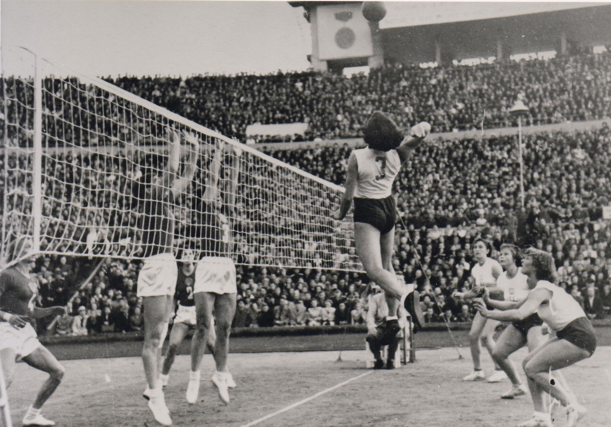
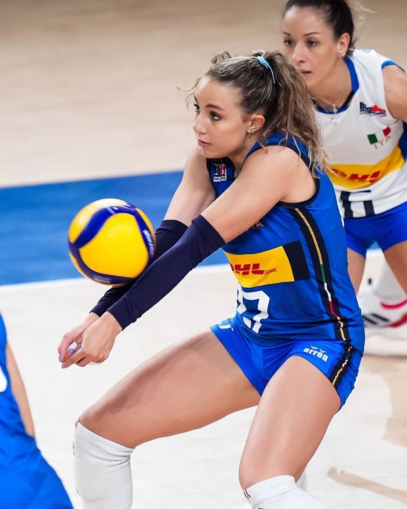

Istoria Voleiului
Voleiul a fost inventat în 1895 de William G. Morgan, un instructor de educație fizică din Holyoke, Massachusetts, SUA. Inițial numit "mintonette", sportul a fost creat ca o alternativă mai puțin intensă la baschet pentru membrii mai în vârstă ai YMCA.
Primul meci oficial de volei a avut loc la Springfield College în 1896. Sportul s-a răspândit rapid, ajungând în Canada în 1900 și în Asia în 1908. Federația Internațională de Volei (FIVB) a fost fondată în 1947, iar în 1964 voleiul a devenit sport olimpic.
În România, voleiul a început să se practice în anii 1920, iar prima competiție oficială a avut loc în 1922. Echipa națională a României a obținut rezultate notabile în anii '70 și '80, câștigând medalii la Campionatele Europene.
Astăzi, voleiul este unul dintre cele mai populare sporturi de echipă din lume, cu peste 800 de milioane de jucători care îl practică cel puțin o dată pe săptămână. Sportul s-a diversificat în mai multe variante, cele mai cunoscute fiind voleiul de sală și voleiul pe plajă.